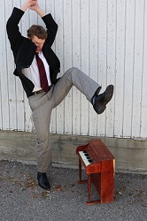
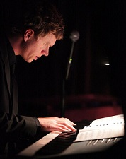
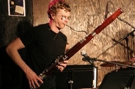

RICH RAMBERG
Composer / Keyboard / Woodwinds

Hailing from Minneapolis, Minn., Rich Ramberg studied bassoon, contrabassoon, and music cognition at Northwestern University. During that time, he performed with the Civic Orchestra of Chicago and in productions of Evita, Footloose, Into the Woods, and Titanic: The Musical. Upon earning his master’s degree from Yale University, Rich toured internationally with German productions of Aida and Carmina Burana, as well as with soloists from the Bolshoi, Kirov, and Kiev Ballets. Equally at home in classical and popular genres, Rich performed with Andy Summers of The Police, Krzysztof Penderecki, Sir Andrew Davis, Chris Brubeck, and David Robertson. He is currently principal bassoon in the Orange County Symphony, a founding member of the chamber ensemble Third Wheel, electric bassoonist in the Mortified After-School Orchestra, and a freelance musician in Southern California. His performances can be heard on the Naxos and Summit Records labels.
Also an active composer, Rich’s writing credits include numerous works for popular, jazz, and classical ensembles, as well as theatrical performances and films, including the motion picture Cold Feet. While living in Chicago, he served as music director and composer for Griffin’s Tale children’s repertory theater company. Most recently as a writer and performer, he joined the Story Pirates, an organization which celebrates the words and ideas of young people through original arts and literacy programs.
Rich in Action...

Jamming on the keys.

Jamming on bassoon.